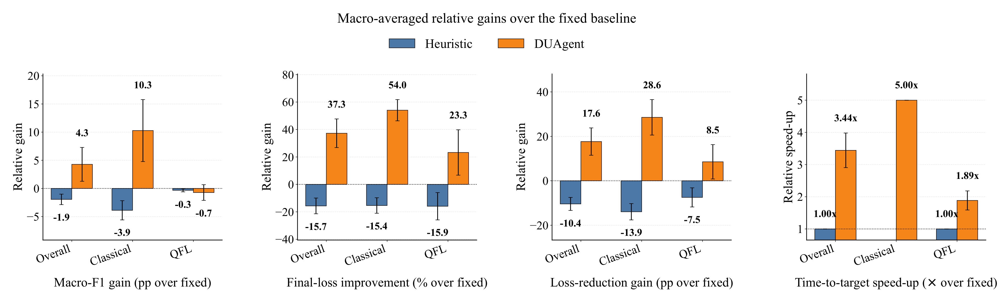
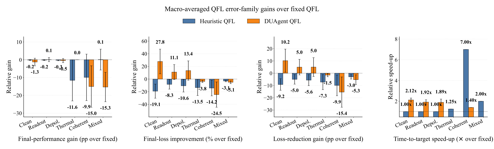
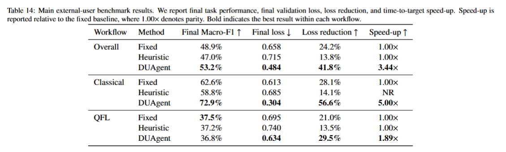
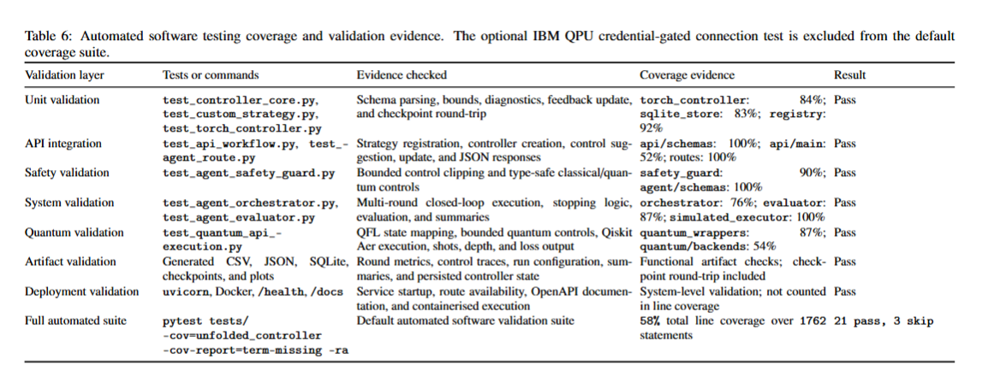

Deakin University
Faculty of Science, Engineering and Built Environment
School of Information Technology
Open-source research platform · Classical FL · QFL · Hybrid adaptive control
DeepUnfolding-Agent: Strategy-Agnostic Deep-Unfolded Adaptive Control
DUAgent
Reusable Agnostic Adaptive Agent
DeepUnfolding-Agent is a reusable FastAPI software platform that exposes deep-unfolded controllers through stable APIs for classical, quantum, and hybrid optimization workflows.
1Deakin University
Faculty of Science, Engineering and Built Environment
School of Information Technology
Melbourne, Australiay
DUAgent headline outcomes
Performance Highlights
These summary figures are adapted from the external-user benchmark table and are presented in the compact, metric-first style commonly used on academic project pages.
+4.3 pp F1 vs Fixed3.44× speed-up
Best overall macro-F1
53.2%
DUAgent improves final macro-F1 from 48.9% to 53.2% and reduces final loss from 0.658 to 0.484.
- +4.3 points macro-F1 over Fixed
- −26.4% final-loss improvement
- 3.44× time-to-target speed-up
+10.3 pp F1 vs Fixed5.00× speed-up
Strongest benchmark gain
72.9%
DUAgent yields the strongest classical gain, increasing final macro-F1 from 62.6% to 72.9% while lowering final loss from 0.613 to 0.304.
- +10.3 points macro-F1
- 56.6% reported loss reduction
- 5.00× speed-up
+8.5 pp loss-reduction gain1.89× speed-up
Improved optimization efficiency
1.89×
In QFL, DUAgent lowers final loss from 0.695 to 0.634 and increases reported loss reduction from 21.0% to 29.5%.
- −8.8% final-loss improvement
- +8.5 points loss-reduction gain
- 1.89× speed-up
21 pass3 skip
Automated testing evidence
21 / 3
The default automated software validation suite reports 21 passes, 3 skips, and 58% total line coverage over 1762 statements.
- 100% API schema coverage evidence
- 100% routes coverage evidence
- 76–100% orchestration and executor evidence
Latest News
- Project website updated with DUAgent architecture, benchmark results, plots, contributor descriptions, and an interactive browser-side API demo.
- DeepUnfolding-Agent GitHub repository created for public research dissemination.
- External-user benchmark scripts prepared for classical FL, QFL, hybrid workflows, noisy simulation, and IBM QPU execution.
Abstract
Adaptive controllers for classical, quantum, and hybrid optimization workflows are often implemented as task-specific code coupled to a particular dataset, model, or training loop. This limits reproducibility, reuse, and comparison across learning strategies.
DeepUnfolding-Agent addresses this limitation by exposing deep-unfolded adaptive control through a schema-based FastAPI interface. External systems provide runtime diagnostic variables and receive bounded control variables, enabling reusable controller integration across federated learning, quantum federated learning, and hybrid optimization settings.
Key Contributions
Replace or refine these statements to match the final paper contribution list.
Reusable deep-unfolded controller API
A strategy-agnostic FastAPI architecture separates strategy schemas, controller creation, control suggestion, update cycles, and persistence from dataset-specific training code.
Bounded agentic orchestration
The observe–decide–act–evaluate–update loop automates repeated controller use while enforcing schema-defined and user-defined safety bounds on control variables.
Classical, quantum, and hybrid workflows
The platform supports classical FL controls, QFL controls such as learning rate, shots, circuit depth, entanglement depth, and measurement reuse, and hybrid controller experiments.
System Pipeline
A website section for your main architecture, API loop, quantum workflow, and benchmark workflow figures.

DUAgent API control-lifecycle matrix: user commands are mapped to public API endpoints, internal controller calls, processing logic, and output evidence.
1. Register strategy schema
Define ordered diagnostic state variables and bounded control variables for classical, quantum, or hybrid workflows.
2. Create controller
Create a reusable controller instance through the API and receive a controller identifier for later calls.
3. Suggest controls
Send runtime diagnostics and receive bounded control values such as learning rate, FedProx μ, local epochs, shots, and circuit depth.
4. Update and persist
Evaluate the resulting round, update the controller, and save metadata/checkpoints for reproducible reuse.
Interactive browser-side demonstration
DUAgent Control Loop Demo
This static GitHub Pages demo illustrates how DUAgent converts runtime diagnostics into bounded controls. Visitors can modify the diagnostic values and immediately observe how the suggested controls, projected validation loss, safety clipping, and API-style JSON outputs change.
Closed-loop API flow
The agent is initialised and ready to begin the adaptive-control loop.
API Inspector
Submit autonomous goal
POST
/agent/run-autonomous-experiment
Request
Response
Parameter Sandbox
Change the diagnostics and constraints to see the controller response. This is useful for explaining the DUAgent idea to reviewers, external users, and collaborators.
Increase shot noise or gradient norm to see DUAgent allocate more conservative controls and more quantum measurement resources under the user-defined safety bound.
Main Results
This section foregrounds the most useful quantitative evidence for DUAgent, combining benchmark percentages, comparative plots, and paper tables in a project-page layout.
Best macro-F1Lowest final loss
DUAgent outperforms fixed and heuristic control
Final macro-F1: 53.2% · Final loss: 0.484 · Loss reduction: 41.8% · Speed-up: 3.44×
+10.3 pp F1−50.4% final loss
Largest gain appears in the classical workflow
Final macro-F1: 72.9% · Final loss: 0.304 · Loss reduction: 56.6% · Speed-up: 5.00×
Lower final loss1.89× speed-up
Quantum workflow benefits from adaptive efficiency
Final macro-F1: 36.8% · Final loss: 0.634 · Loss reduction: 29.5% · Speed-up: 1.89×


Downloads
Download the supporting project-page artefacts used in this result section.

Validation and Coverage Evidence
In addition to benchmark performance, the website can highlight software quality evidence, which is particularly useful for a systems or software-oriented research contribution.
Automated suite
58% total line coverage over 1762 statements, with 21 pass and 3 skip.
API coverage evidence
100% for api/schemas, 100% for routes, and 52% for api/main.
Safety and orchestration
100% for safety_guard and agent/schemas, 76% for orchestrator, and 87% for evaluator.
Quantum modules
87% for quantum_wrappers, 54% for quantum/backends, and a credential-gated IBM QPU connection test noted separately.

People and Contributions
This section provides transparent academic attribution for the DeepUnfolding-Agent project.
Lead researcher · Software architect · First author
Shanika Iroshi Nanayakkara
Conceptualized DeepUnfolding-Agent, designed the strategy-agnostic controller API, implemented the FastAPI software platform, prepared classical and quantum benchmark workflows, generated experimental evidence, and developed the project website.
- Conceptualisation and system architecture
- API implementation, controller workflow, and persistence design
- Classical, quantum, and hybrid benchmark preparation
- Experimental analysis, figure preparation, documentation, and website development
Co-supervisor · Research guidance
Shiva Raj Pokhrel
Provided research supervision, technical feedback, manuscript review, and academic guidance for the development and presentation of the DeepUnfolding-Agent project.
- Research supervision and technical feedback
- Review of system framing, experimental design, and result presentation
- Manuscript and thesis-related guidance
Citation
If you use DeepUnfolding-Agent in research, please cite the associated paper and software repository.
@software{duagent2026,
title = {DeepUnfolding-Agent: A Strategy-Agnostic API for Deep-Unfolded Adaptive Control},
author = {Nanayakkara, Shanika Iroshi, Pokhrel, Shiva Raj},
year = {2026},
url = {https://github.com/shanikairoshi/DeepUnfolding-Agent}
}